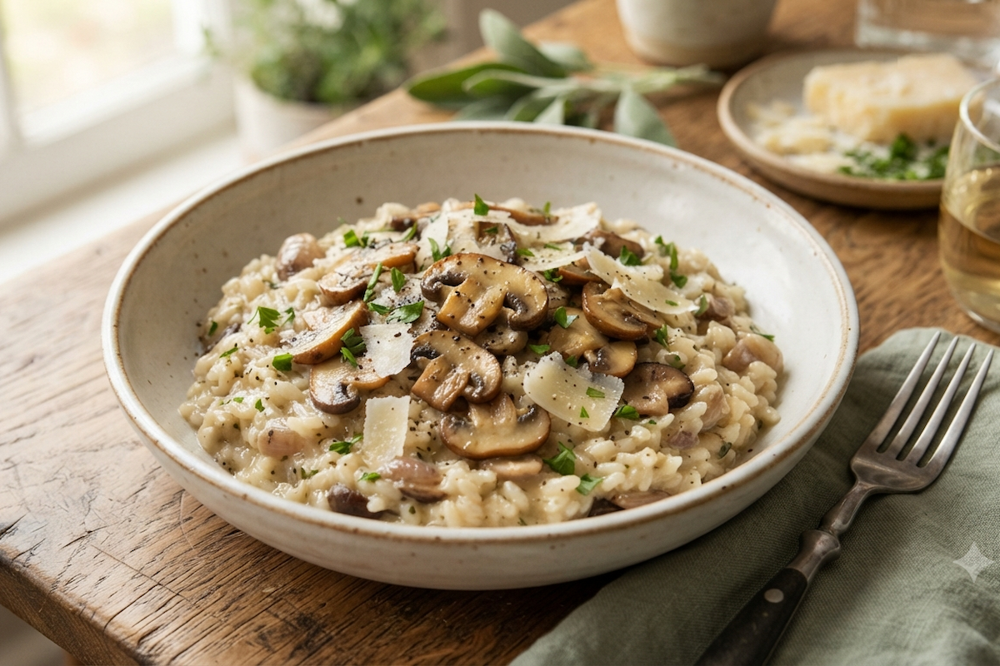

Risoto de Cogumelos
Cremoso, aromático e vale cada minuto de atenção no fogão. Um clássico que parece complicado, mas é só uma questão de paciência e carinho na hora de mexer.
- Tempo de preparo: 45 minutos
- Rendimento: 4 porções
- Dificuldade: Difícil
Ingredientes
Modo de Preparo
Veja também: Ver todas as Receitas